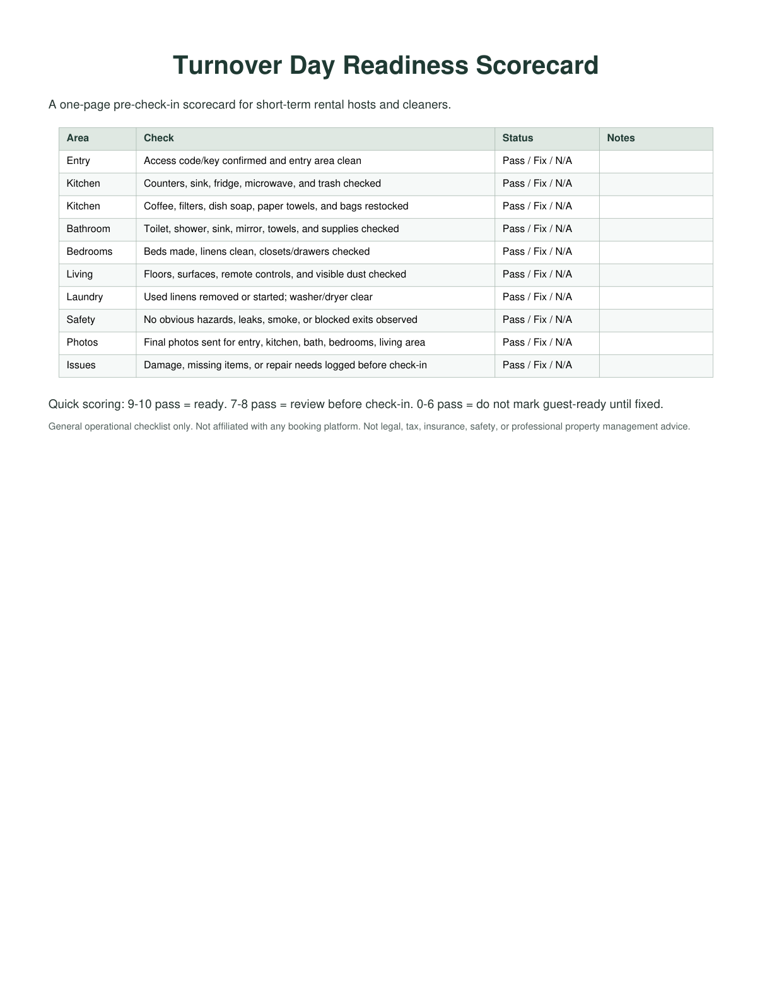

Cleaner handoff
Give cleaners a room-by-room checklist so final tasks are clear before the property is marked guest-ready.
HostProof Tools
A remote cleaner handoff workflow for hosts who need same-day turnover proof, restock notes, standardized photo angles, and guest-ready confirmation before the next check-in.
For remote and part-time short-term rental hosts, same-day turnover is a narrow handoff window. A message that says "done" is not enough when the next guest checks in at 4:00.
The Guest-Ready Turnover Kit gives you a practical way to confirm the property is cleaned, restocked, photographed from the same angles, checked for issues, and ready for the next guest. It is built for independent hosts who need structure without adding another subscription.

Use the free scorecard as a quick check, or use the full kit as a repeatable operating system across one to five properties.
Give cleaners a room-by-room checklist so final tasks are clear before the property is marked guest-ready.
Ask for the same shots every turnover: entry, kitchen, bathrooms, bedrooms, floors, fridge, supply areas, and any issue areas.
Track toilet paper, towels, trash bags, coffee, soap, linens, and other guest-ready supplies before the next stay.
Record damage, missing items, low supplies, leaks, odors, and repair needs before they disappear into messages.
Track priority, owner, vendor, due date, estimated cost, actual cost, and completion status for repair work.
Keep cleaner, plumber, electrician, backup host, and emergency contact details close to the turnover workflow.
A low-friction proof flow should be fast enough for cleaners to finish and clear enough for a remote host to review before the next check-in.
Use standardized photo angles so you can compare the property from one turnover to the next without asking for a long report.
Log low supplies while the cleaner is already in the property: paper goods, towels, linens, coffee, soap, trash bags, and guest basics.
Pair the final room photos with one simple status update, such as "Property ready," plus any damage or maintenance notes.
The paid kit is an editable Excel, CSV, and printable PDF bundle for hosts who want a low-friction proof flow for cleaner handoff, inventory, repairs, issues, vendors, and monthly review.
Start with the free scorecard if you only need a lightweight pre-check-in review for your next same-day turnover.
A one-page PDF for checking entry, kitchen, bathroom, bedroom, laundry, safety, photos, and issue notes.
A simple photo request list for remote hosts who need the same shots every turnover before they mark the property ready.
A starter CSV for tracking basic guest supplies and restock needs before check-in.
Use this guide if you want a short version of what to ask for before marking a same-day turnover guest-ready.
See the exact photo angles, restock notes, issue checks, and final ready message a remote host can ask for.
It is a repeatable checklist for the work between checkout and check-in: cleaning, restocking, final photos, issue notes, repairs, and guest-ready confirmation.
Yes. It is especially useful when you are not on site and need a cleaner, helper, or co-host to send consistent proof before the next guest arrives.
Ask for the same photos every turnover: entry, kitchen, bathrooms, bedrooms, floors, fridge, supply areas, issue areas, and a final ready-for-next-guest view.
No. It is a spreadsheet and PDF template bundle. It is designed for hosts who want a simple operating workflow without paying for full property management software.
Yes. The workbook is designed for independent hosts managing one to five properties, with property setup, vendor contacts, inventory, issue tracking, and monthly review tabs.
No. This product is not affiliated with, endorsed by, or sponsored by Airbnb, Vrbo, Booking.com, or any booking platform.